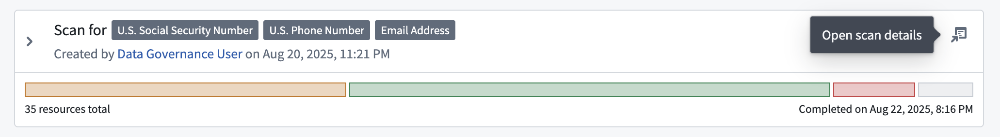
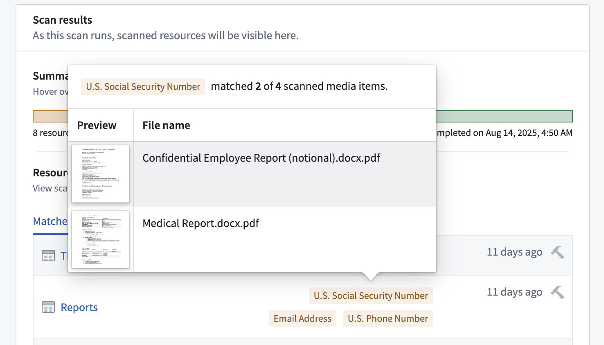
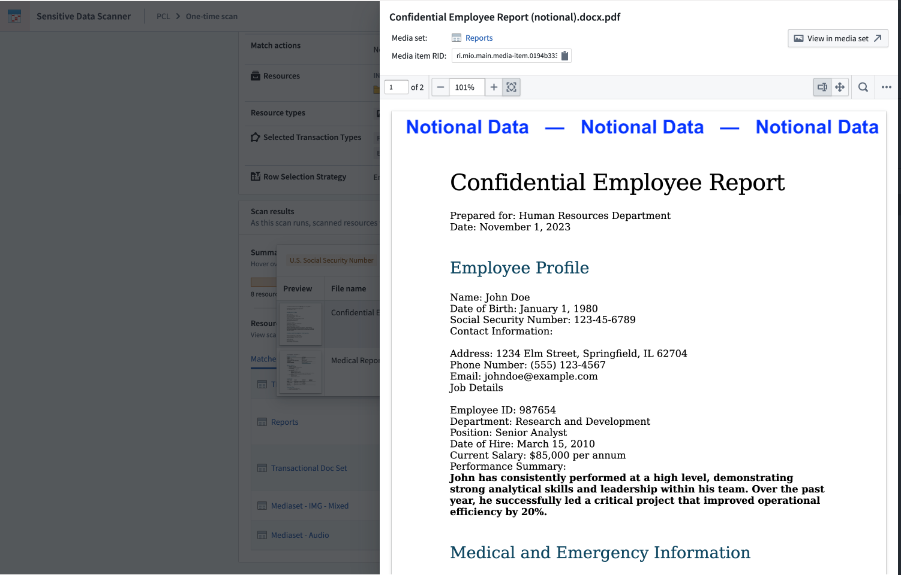
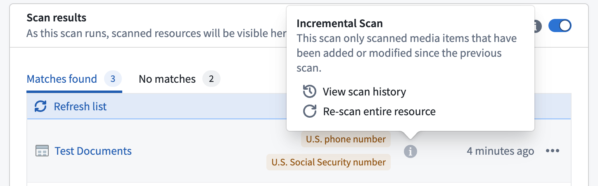
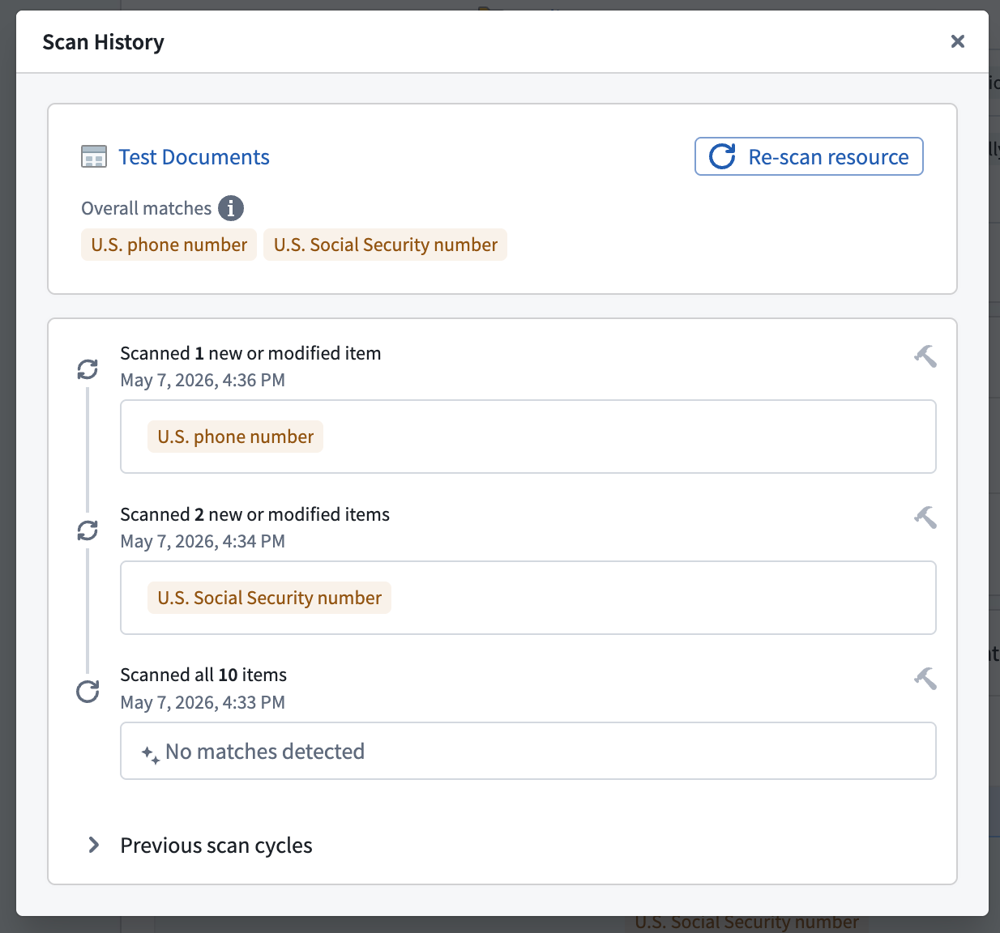

Sensitive Data Scanner (SDS) can scan media sets for data matching a particular regex or language model match condition. SDS converts the media items in a media set to text, then evaluates the match condition against the extracted text. The text extraction method used will depend on the type of the media set being scanned. Language model match conditions that use a model with vision support are the exception: those models can classify image content directly.
Text extraction methods are as follows:
Media sets can be scanned with content-only regex match conditions or content-based language model match conditions. For language model match conditions, select a model that supports vision if you want the model to classify image content directly. Text-only models can still classify extracted text, including OCR-extracted text from images and documents and transcribed text from audio. For more information about enabling and managing LLM usage, review the LLM capacity management documentation.
Issue match actions will automatically be aggregated. This means that for a given media set, even if there are multiple media items that match a given match condition, only a single issue will be opened on the media set.
OCR and audio transcription may not produce exact replicas of the text in the original media content. For example, OCR may split a single word into two strings, capitalize letters, or incorrectly extract text from images that do not contain text. This can lead to unexpected behavior when matching against a regex, especially if the regex assumes that text will conform to certain formatting or capitalization rules.
To see the text that SDS ran a regex against, you can create a Pipeline Builder pipeline that takes a media set as input and applies the following transforms for media set types:
Select the Open scan details button to review the scan configuration and inspect the results. Similar to scanned datasets, the Scan results section is where SDS lists all the media sets with scan matches as well as their exact match conditions.

Hover your cursor over any match condition to render a preview of media items which triggered the match condition.

You will also see the total number of matched and scanned media items. If a media set contains a large number of matches, then Foundry displays a preview of the first ten.
Select a thumbnail to open a detailed view of the media item for further exploration, such as zooming in on an image or reviewing multi-page documents.

Media set scans can be computationally expensive, especially when SDS extracts text from media items before evaluating match conditions. You can use the following strategies to manage compute costs and optimize scan performance:
In recurring scans, SDS scans media sets incrementally. This means that SDS will scan only media items that have been added or updated since the last successful scan. This significantly reduces the duration and compute required for recurring media scans, as SDS does not need to process already scanned media items.
If a scan was performed incrementally, an info icon will be shown in the scan row of the results table.

You can open a resource's scan history by selecting View scan history in the scan result's context menu. The scan history displays a timeline of all previous incremental scans, including the number of scanned items and the detected match conditions. The top card of the history view shows you an aggregated overview of all the detected match conditions across all incremental scans. You also have the option to trigger a full re-scan of the entire resource. This is recommended after you delete PII from a dataset, as it helps you verify whether the match condition is still detected, or whether all matching data has been removed.
You can also trigger a full re-scan of the entire resource. Run a full re-scan after you delete PII from a dataset to verify whether the match condition is still detected, or whether all matching data has been removed.
